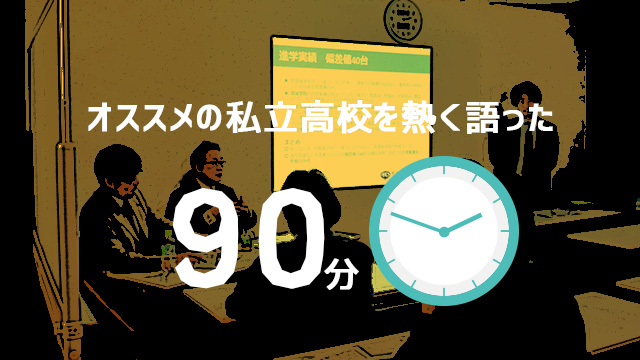

3月20日。4月の新学期、新学年を前に、ARCSでは月イチお話し会3月「偏差値別 オススメ高校」を開催しました。今回のメインプレゼンターはわたしということもあり、いつも以上に気合の入る会でした。
そんな心持ちが影響したのか資料作成がとんでもないことに。偏差値表と各学校のパンフレット、独自に調査した取材記録を広げて深夜まで格闘した結果、プロジェクターで投影しても文字が小さくて読めないくらいびっしりと、パワーポイントで20枚…。結構な労力でしたので、今後もいろいろなところでちょこちょこと小出しにしていきたいと思います。
さて、資料作成に力が入った結果かどうかわかりませんが、会本番もしゃべりたおしてしまいました。言いたいことが多すぎて、話しても話しても終わりません。それもそのはず、高校受験の世界は本当に奥深いのです。一見分かりやすい「大学入試実績」はその裏にいろいろな「統計のマジック」が隠されています。また、これも一見分かりやすい「理念」も、校内の本当のところは部外者にはなかなか分かりません。正直なところ、入学せずに外から眺めて、ある学校の真の姿を知るのはとても難しいことなのです。
そこで今回はこの記事の中で、大学入試実績を見るうえでのポイントを一つ書いてみましょう。
コース制を敷く進学校の実績は要注意
近隣の学校を見ても、偏差値65以下の学校のほとんどが「コース制」を敷いています。一般的には「進学」と「特進」、さらに特進コースの中に「選抜」を作るパターンですが、中には選抜を細分化して６～７コースを設置しているところまであります。このようなコース制は、「広報的にとてもうまい」やりかたです。
たとえばの話で架空のA高校を例に取ってみましょう。A高校は偏差値48の「進学コース」、偏差値54の「特進コース」、偏差値62の「選抜Bコース」、偏差値65の「選抜Aコース」の4コースからなります。
| 架空A高校のコース制 | |||
| 進学コース | 特進コース | 選抜Bコース | 選抜Aコース |
| 偏差値48 | 偏差値54 | 偏差値62 | 偏差値65 |
そしてこのA高校、2015年の実績は東大一桁をはじめとして早慶に合算で60、MARCHに80名ほどでした。この進学実績は一見するととても優秀で、保護者の方としては、「偏差値48なのに、なんてスゴイ進学実績！」と思われるでしょう。
| 架空A高校の進学実績 | ||
| 東大 | 早慶 | MARCH |
| 一桁 | 60名 | 80名 |
しかし、当然のことながらカラクリがあります。Ａ高校がパンフレットの冒頭やインターネットサイトで掲示する実績のほぼすべては「選抜コース」の生徒が出したものです。そして、実績は学校全体として出す以上、コースごとの細かい実績を出す必要はないわけです。ちなみに、ほぼすべての学校が、学校で行われる説明会やパンフレットの当該ページにはある程度細かくコースごとの実績を載せていますので、特にウソをついているわけではありません。ただし、それらの説明を聞いたとしても、やはり「Ａ高校は東大や早慶に受かるスゴイ進学校」というイメージは残るでしょう。実態は、選抜コースの2クラス（70～80名）の実績であり、生徒数の大半を占める他コースの生徒の進学先は「その他」としてくくられているのです。
今回は、一番分かりやすく、かつ悪質”ではない”ものを例として挙げてみましたが、このようなカラクリは他にもたくさんあります。そのような状況が良いか悪いかはさておき、学校を「冷静に」見るためには知っておかなければならない情報です。
今後もＡＲＣＳでは、月一お話会を通じて高校に関する様々な情報を随時ご提供していきます。高校受験を控えたお子さんをお持ちの保護者の方は、是非ふるってご参加ください。
次回の月イチお話会ご案内
【4月】月イチお話会「子どもを伸ばす親とは！？《小学生編》」
現在教育研究所ARCSでは地方自治体の要請を受け、小学校の「学力向上プロジェクト」のメンバーとして様々な改革に取り組んでおります。そこから 分かってきた、国・地方自治体が目指す小学校の理想が「子どもたちの主体的学習」であり、すでにいろいろな具体的な試みを始めているということ。
4月の月イチお話会では、このような変革の時に当たり、今ご家庭でどのような指導が必要とされているのか出来る限り分かりやすく解説したいと考えて います。小学生の特に高学年は、ほとんどの保護者の方にとって子供の進路に悩む「最初のタイミング」でもあります。4月の月イチお話し会で多くの情報を入 手していただき、是非じっくり考えてみてください。